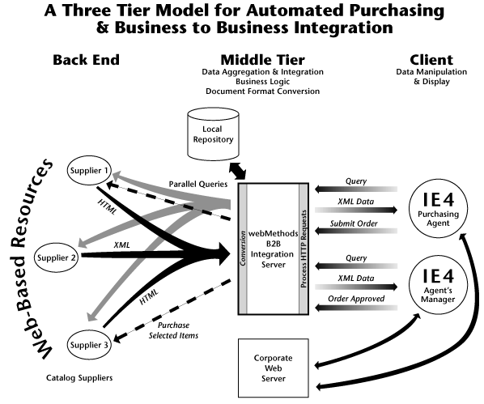

|
| ||
|
| ||
July 28, 1998
The Business Problem
The Role of XML
Solving the Problem with webMethods B2B Integration Server, WIDL, and XML
Situation Overview
User Scenario
Behind the Curtain
XML Example
Information Flow Diagram
The ACME Corporation is a multi-billion dollar manufacturing company with offices and plants in over 30 locations nationwide. It is set up to be decentralized with purchasing agents at each location, but it tries to keep a tight rein over costs by centralizing acquisition management. The result is a purchasing system that is cumbersome, slow, and error-prone. Requisition forms have to be completed at the employee location, faxed to the administrative headquarters, and then often faxed to a manager for approval and signature. Furthermore, there is no automatic way to consolidate catalog information from multiple sites or electronically purchase items. Consequently, the maintenance cost of this system is very high.
XML provides an efficient, flexible, and extensible means of describing data and specifying interchange formats. With an XML-aware browser like Microsoft® Internet Explorer 4.0 and an increasing number of XML-enabled applications, it is easier than ever before to build robust and flexible applications for electronic commerce.
In this scenario, XML is used to define an extensible query mechanism and to standardize the descriptions of the catalog elements that are returned by the query. XML also makes it possible to retrieve very precise results. After catalog items have been selected, XML provides the mechanism for specifying all the parameters in the purchase order. XML is also used as the basis for Web Interface Definition Language (WIDL) from
webMethods (http://www.webmethods.com/  ). A WIDL is a specification that (in this case) describes which portions of data are to extracted and manipulated by the webMethods' Integration Server.
). A WIDL is a specification that (in this case) describes which portions of data are to extracted and manipulated by the webMethods' Integration Server.
In this scenario, the ACME Corporation has adopted a very efficient system: an automated purchasing application. With this application, ACME purchasing agents use a single user interface to simultaneously access a variety of suppliers' Web-based catalogs. They can search for items across multiple Web sites, select items, and generate a purchase order that will result in the shipment of the items directly to their location. The system also preserves ACME's centralized administration by allowing managers to remotely log in to review purchase orders submitted by their subordinates.
To accomplish this, live data from shopping sites on the Web is extracted according to the integration rules executed on the Business-to-Business (B2B) Integration Server. This Web-based procurement system illustrates how webMethods' B2B Integration Server can use XML to specify requests and format structured information that can be sent directly to Internet Explorer 4.0. Now, organizations can aggregate information from multiple Web sites, interact with those sites to conduct all forms of electronic commerce, and clearly organize and present both the information and the functionality to meet their specific needs.
George, a purchasing agent at ACME, needs to buy several high-speed Ethernet cards for an engineering group. He logs on to his corporate intranet and selects "Purchasing System". The URL takes him to the official purchasing page, which lists authorized vendors -- including Cyberian Outpost. He clicks the Search button and is presented with a search form that specifies various product categories. He chooses Networking Card and inputs "Ethernet". Search results from all the vendor sites are then displayed in one table. The categories include the supplier's identifier number, the product description, the price, and available inventory.
Since the data is in XML, and George is using Internet Explorer, there are many ways to browse and organize the search results. Ultimately, George selects two Ethernet cards: 3Com and Adaptec. He then clicks a button to generate purchase orders. The PO is automatically generated with both order data and data about George (his cost center and security level). He also inputs the engineering cost center and project code. He then reviews the order one last time and submits it to his manager for approval.
As soon as George's manager logs on, she sees George's purchase request along with others from the same group. She reviews the requests, drills down for more detail if desired, and accepts or denies the purchase order(s). She approves George's request and clicks on the Order button to send the order to the supplier.
Later that day, an executive Bean Counter at ACME wants to see the accumulated project expenses for the previous week. He opens a Microsoft Excel spreadsheet that contains the appropriate numbers and categories. He updates it by selecting the Update button from the customized toolbar.
<?xml version="1.0"?> <!DOCTYPE WIDL-MAPPING SYSTEM "widl30_mapping.dtd"> <WIDL-MAPPING NAME="Outpost" VERSION="3.0"> <!-- ============================================== --> <SERVICE NAME="Search" INPUT="SearchInput" OUTPUT="SearchOutput" METHOD="GET" URL="http://srch.outpost.com/search/productsearch.cfm" SOURCE="http://www.outpost.com/"/> <!-- ============================================== --> <INPUT-BINDING NAME="SearchInput"> <VALUE NAME="query" FORMNAME="name" USAGE="DEFAULT"/> </INPUT-BINDING> <OUTPUT-BINDING NAME="SearchOutput"> <CONDITION TYPE="FAILURE" REFERENCE="doc.p[0].text" MATCH="*0 matches*" REASONTEXT="No matches found"/> <VALUE NAME="sku" DIM="1" USAGE="DEFAULT">doc.table[1].tr[].td[1].font[1].text</VALUE> <VALUE NAME="desc" DIM="1" USAGE="DEFAULT">doc.table[1].tr[].td[2].font[1].text</VALUE> <VALUE NAME="price" IM="1" USAGE="DEFAULT">doc.table[1].tr[].td[5].font[1].text['\$&']</VALUE> </OUTPUT-BINDING> <!-- ============================================== --> </WIDL-MAPPING>

Did you find this material useful? Gripes? Compliments? Suggestions for other articles? Write us!
© 1999 Microsoft Corporation. All rights reserved. Terms of use.